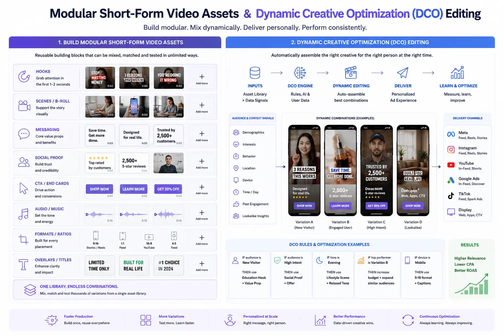
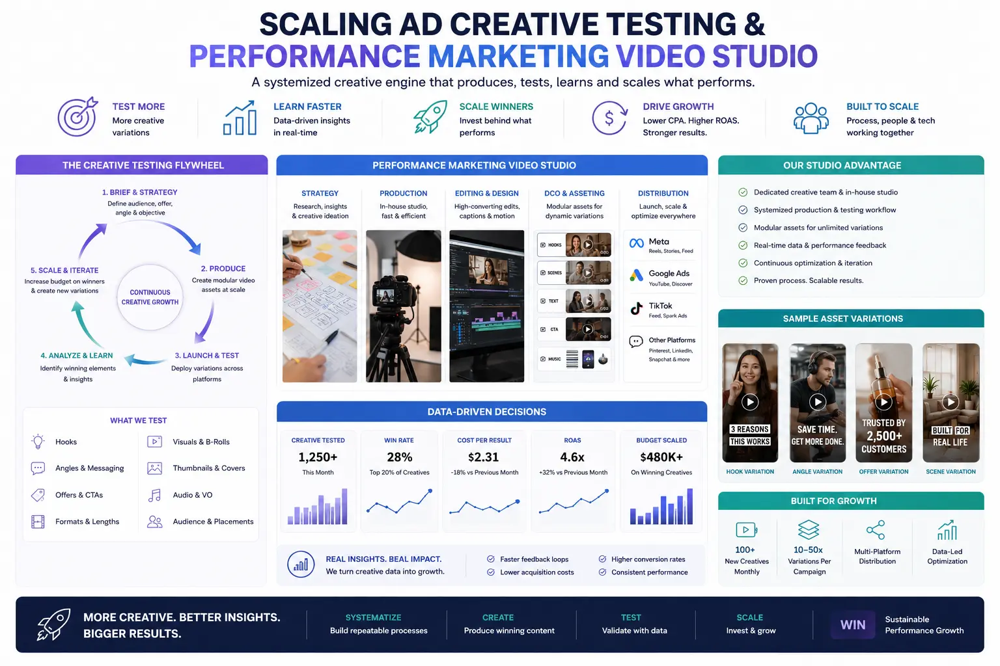

Structuring a Modular Short-Form Asset System to Fuel Meta and Google Ad Creative Testing
Why Ad Creative Volume Is Now the Primary Performance Lever
In 2026, the single most important variable in paid social and search advertising performance is not audience targeting, not bidding strategy, and not budget allocation — it is creative volume. Meta's Advantage+ and Google's Performance Max campaigns are designed to optimise dynamically across audiences, placements, and bidding strategies — but they can only optimise as effectively as the creative library they are given. Feed the algorithm one ad, and it has nothing to test. Feed it fifty variations, and the algorithm will find combinations and audience-creative matches that no human media buyer could identify manually.
The challenge is that producing fifty unique video ads through traditional production — scripting, filming, and editing each as an independent project — is prohibitively expensive and operationally unsustainable. This is the problem that Modular Short-Form Video Assets solve: a production architecture where video ads are not created as monolithic, single-use pieces but as systems of interchangeable components — hooks, body segments, calls-to-action, and end cards — that can be assembled in hundreds of unique combinations from a manageable number of filmed modules.
This modular approach is the foundation of modern Social Media Content Creation for performance marketing — and when combined with Dynamic Creative Optimization (DCO) Editing, it produces a scalable, data-driven creative testing system that continuously identifies and amplifies winning ad combinations while retiring underperformers.
The Modular Asset Architecture: Components and Structure
The core of a Modular Short-Form Video Assets system is the decomposition of a video ad into discrete, independently filmed components that can be mixed and matched. Understanding Modular video ad components is essential for building a scalable creative library:
- Hooks (first 1-3 seconds). The hook is the most critical component — the visual and textual element that determines whether the viewer stops scrolling. High-conversion visual hooks include pattern-interrupt visuals (unexpected movement, bold text, surprising imagery), direct-address openers ("Stop scrolling if you..."), product-first reveals (the product appearing immediately in a visually striking context), and social proof statements ("Over 10,000 customers love this"). Each hook is filmed as an independent 1-3-second clip.
- Body segments (3-20 seconds). The body delivers the core message — product features, benefits, demonstrations, testimonials, or storytelling. Multiple body variations are filmed covering different angles: feature-focused, benefit-focused, problem-solution, social proof, comparison, and lifestyle context. Each body segment is designed to connect seamlessly to any hook and lead naturally into any CTA.
- Call-to-action end cards (2-5 seconds). The CTA drives the conversion action — "Shop Now," "Learn More," "Get 20% Off," "Free Trial." Multiple CTA variations are produced with different offers, urgency levels, and visual treatments. These are the most easily varied component and should be refreshed most frequently.
- Transition elements. Short visual transitions — wipes, zooms, text animations, sound effects — that create seamless connections between modules. A library of 5-10 transition styles allows editors to assemble modules without visible seams.
Scalable Creative Testing
Scaling ad creative testing through modular assets means producing 50-100+ unique ad variations from a single production session — giving Meta and Google algorithms the creative volume they need to optimise effectively.
DCO Integration
Dynamic Creative Optimization (DCO) Editing automatically assembles and tests modular component combinations, identifying winning hook-body-CTA configurations at a speed and scale that manual testing cannot achieve.
Platform-Native Variations
Building asset variations for Meta and Google from modular components ensures each platform receives format-optimised creatives — vertical for Reels, horizontal for YouTube, square for feed — without producing each format independently.
Production Efficiency
A performance marketing video studio configured for modular production can generate an entire quarter's ad creative library in 2-3 production days — compared to weeks of traditional per-ad production.

The Production Workflow: From Planning to Assembly
Building a modular asset library requires a production workflow specifically designed for component-based filming — different from traditional ad production in structure, pacing, and output targets:
- Step 1 — Creative matrix development. Before production, build a matrix that maps all planned modules: 5 hook concepts × 3 body angles × 3 CTA offers = 45 potential ad combinations. This matrix becomes the production shot list, ensuring every required module is captured during the shoot.
- Step 2 — Modular filming sessions. Film all hooks as a batch, all body segments as a batch, and all CTAs as a batch — maintaining consistent lighting, framing, and audio across all modules so they can be assembled interchangeably. Use a standing set in a performance marketing video studio to maintain visual consistency across all components.
- Step 3 — Component editing and formatting. Edit each module as a self-contained clip with clean in and out points, consistent audio levels, and platform-native formatting. Export each module in all required formats — 9:16 vertical, 16:9 horizontal, 1:1 square — with and without burned-in captions.
- Step 4 — Automated assembly. Use video editing templates or automated assembly tools to combine modules into complete ad variations. A script or template-based workflow can assemble 50+ unique ads from a module library in hours rather than days.
- Step 5 — Platform upload and DCO configuration. Upload all variations to Meta Ads Manager and Google Ads, configuring Dynamic Creative Optimization (DCO) Editing settings to allow the algorithms to test all hook-body-CTA combinations against target audiences. Monitor performance data and identify winning components for amplification and losing components for retirement.
Platform-Specific Asset Strategies
Building effective asset variations for Meta and Google requires understanding each platform's creative requirements and algorithmic preferences:
Meta (Facebook / Instagram)
- Produce vertical 9:16 as the primary format for Reels and Stories placements — the highest-volume, lowest-CPM inventory on Meta.
- Design hooks for sound-off viewing — bold text overlays, visual pattern interrupts, and product reveals that capture attention without audio.
- Use Advantage+ Creative settings to allow Meta's algorithm to auto-crop, auto-caption, and auto-format assets for optimal placement performance.
- Upload 5-10 variations per ad set to give the algorithm sufficient creative volume for meaningful optimisation — fewer than 5 limits the algorithm's ability to identify winners.
Google (YouTube / Performance Max)
- Produce horizontal 16:9 as the primary format for YouTube in-stream and discovery placements.
- Design hooks for the 5-second skip threshold — the hook must deliver the core value proposition before the viewer can skip.
- Upload assets to Performance Max campaigns as individual components (videos, images, headlines, descriptions) and let Google's algorithm assemble and test combinations across Search, Display, YouTube, and Discover.
- Include both short-form (15-30 seconds) and long-form (60-90 seconds) variations to cover different placement and audience segment preferences.
Cross-Platform Optimisation
- Maintain a centralised asset library with consistent naming conventions (campaign-hook_version-body_version-cta_version-format) for easy retrieval and performance tracking.
- Track performance data at the component level — identify which hooks, bodies, and CTAs perform best, regardless of the combinations they appear in.
- Refresh the highest-fatigue components (hooks and CTAs) monthly while retaining high-performing body segments that maintain relevance longer.
- Partner with a creative advertising agency that understands both production and performance metrics — bridging the gap between creative quality and data-driven optimisation.

Conclusion
Modular Short-Form Video Assets represent the production methodology that modern performance marketing demands. By decomposing video ads into interchangeable Modular video ad components — hooks, bodies, CTAs, and transitions — brands can produce the creative volume that Meta and Google algorithms require for effective optimisation, at a fraction of the cost of traditional per-ad production.
Combined with Dynamic Creative Optimization (DCO) Editing, modular assets enable scaling ad creative testing across platforms — automatically identifying winning combinations and retiring underperformers. The result is a Social Media Content Creation system that is data-driven, economically sustainable, and continuously improving.
At The PhD Ads, we operate as a creative advertising agency with a dedicated performance marketing video studio — producing modular asset libraries, building high-conversion visual hooks, and managing asset variations for Meta and Google that fuel continuous creative testing at scale.
Key Topics
Scale Your Ad Creative Testing with Modular Assets
At The PhD Ads, we produce modular video asset libraries — hooks, body segments, and CTAs designed for Dynamic Creative Optimization on Meta and Google — giving your campaigns the creative volume they need to win.
Email: team@e2o.in